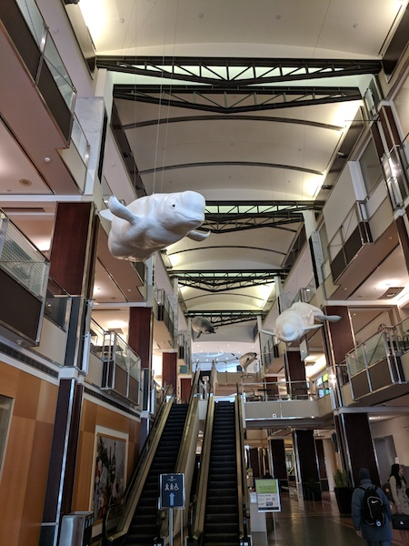
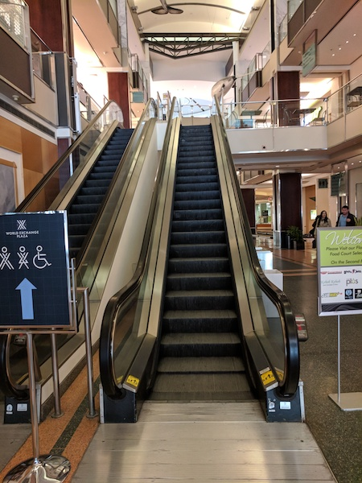
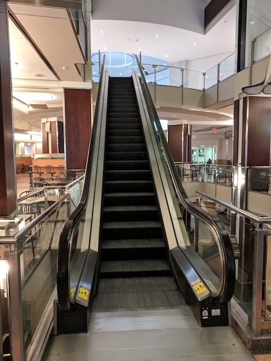
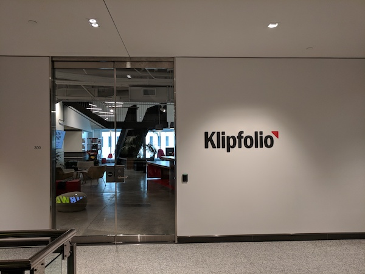

Make your way to the World Exchange Palaza (45 O'Connor St) then find the Narwhales on the main floor.
Find the escalators and take them up to the second floor, i.e. the food court.
Once you reach the food court you'll see the next escalator which will take you up to the third floor.
At the top of the second set of escalators you'll see the entrance to Klipfolio on your left. Come on in and someone will direct you tot the meeting room.
